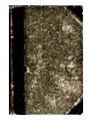
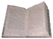
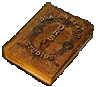
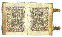
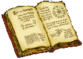

|  | Title: | Official Planescape Fiction |
| Author: | Publisher - Wizards of the Coast | |
| Summary: |
To date, WotC has published a total of five books which use the Planescape setting. Three of them are (unfortunately)
the Blood Wars Trilogy (a series rather strongly disliked by most of the online community); another is
Pages of Pain (a story about/by the Lady of Pain); the last is a novelization of the computer game
Planescape: Torment.
| |
|  | Title: | S.I.G.I.S. |
| Author: | Editors - Scott Kelley and Jon Winter | |
| Summary: |
Sigil's Independent Global Information Service is a long-running, collective piece of Planescape Fiction. Started
by Scott and Jon, S.I.G.I.S. is the number one newspaper in Sigil. It contains a large number of stories which can
serve as plot hooks, as well as samples of nicely role-played factioneers. As a bonus, it's published according to
my Sigil Calendar.
| |
| Title: | Of Conjurations and Summonings | |
| Author: | Jon Winter | |
| Summary: |
Being a short story which illustrates the unforseen side effects
a Summoning spell cast from the Prime can have.
| |
| Title: | The Codex of Infinite Planes | |
| Author: | David Goehrig | |
| Summary: |
This piece of fiction represents a collection of stories all written by one character. The subjects of the
tales vary, but they are all well done and represent a good cross-section of the Planes. Be aware that all
of the stories to date are of a dark, and potentially disturbing, nature.
| |
|  | Title: | The Lexicon Planarae |
| Author: | Editor - Jon Winter | |
| Summary: |
This piece of fiction represents a collection of stories gathered by many planewalkers. The subjects of the
tales vary, but they are all well done and represent a good cross-section of the Planes. Unlike the Codex,
these stories are not all grim and deadly.
| |
|  | Title: | Planar Poetry |
| Author: | Editor - Jon Winter | |
| Summary: |
Short stories and novels aren't the only form that fiction may take. A fair number of cutters have
walked down a different path in their creativity and gone artistic. This link takes you to a fairly
large collection of poems that have been inspired by the game setting.
| |
| Title: | The Sword of Acheron | |
| Author: | Richard Balsley (aka Emperor Xan) | |
| Summary: |
This is a story about the adventures of Calix Arvandus, a member of the Chaos Engineers sect. (The Chaos Engineers
are not found in any of the Planescape canon. They are a net-based entity, created by none other than the author
of this particular story.)
| |
|  | Title: | The Dead Can Float |
| Author: | Mark Linnenburger | |
| Summary: |
A planar story with similarities to the Four Horsemen of the Apocolypse,
featuring Factol Skall and the dead god Myrkul. Read on, for the multiverse
may never be the same again! | |
| Title: | The Brigade of the Broken Leg Story #1 |
|
| Author: | Mark Linnenburger | |
| Summary: |
This is a series of short stories about a brigade of Baatezu which are
stationed in the Outlands. It features good depictions of both Baatezu politics
and Blood War tactics/encounters.
|
 |
Return to Fiction Archive |
 |